Predicting UT1-UTC for leap-second decisions
A comparative data-science project studying Earth's irregular rotation, leap-second history, and forecasting models across LSTM, TimeGPT, and SARIMA.
UT1-UTC signal
1960s - 2020s

Why this matters
UTC is atomic-clock time. UT1 follows Earth's actual rotation. When their difference approaches the allowed boundary, leap seconds are used to keep civil time aligned with Earth rotation. The challenge is that the UT1-UTC signal is non-linear, sawtooth-like, and affected by complex geophysical dynamics.
Before modeling, I mapped the Earth Orientation Parameters to understand which signals were physically meaningful for leap-second forecasting.
x_pole, y_pole
Tracks the wobble of Earth's rotation axis relative to the crust, measured in arcseconds.
UT1-UTC
Measures the divergence between Earth's rotation time and atomic time, staying within about +/-0.9 seconds.
LOD
Length of Day captures whether Earth is rotating slower or faster than the 86400-second day.
dPsi, dEpsilon, dX, dY
Precession, nutation, and celestial-pole corrections used for precise reference-frame computations.
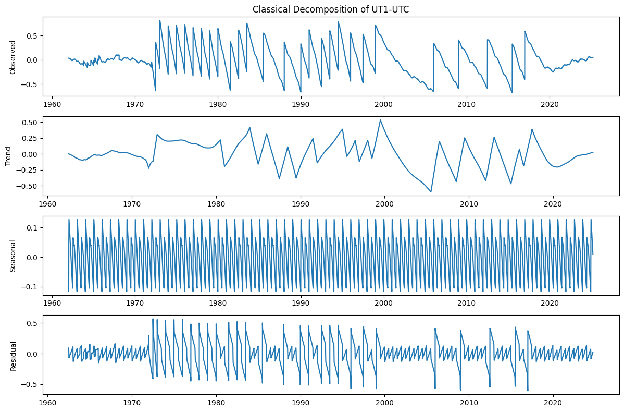
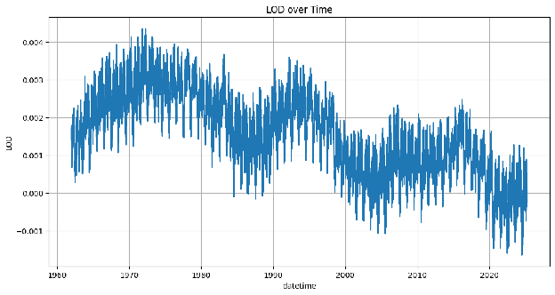
The correlation study helped separate useful forecasting signals from parameters that are scientifically important but weakly related to leap-second scheduling.
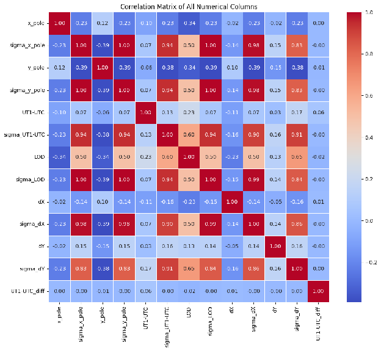
UT1-UTC and LOD were the most relevant variables for leap-second prediction. Polar motion and celestial offsets were weaker contributors.
Uncertainty columns formed a highly intercorrelated cluster, suggesting consistent estimation behavior across measurements.
Weak relationships among several geophysical parameters supported treating them independently rather than forcing a noisy multivariate model.
03 · Leap-second history
The signal changed behavior across five eras
Smoother adjustments before the modern leap-second system.
Dense sawtooth corrections as leap seconds were added frequently.
The final stage of consistent rotational slowdown before a major shift.
Leap seconds became sporadic, creating wider gaps between corrections.
An upward trend appeared as Earth's rotation accelerated, raising discussion of a possible negative leap second.
04 · Model comparison
Testing statistical and machine-learning approaches
Long Short-Term Memory
RMSE
0.5118 s
MAE
0.4759 s
Strong one-step alignment, weak recursive forecasting
The LSTM used a chronological 80/20 split, train-only scaling, 30-day sliding windows, two stacked 50-unit LSTM layers, 20% dropout, and dense output layers. It captured short-term dynamics but drifted toward a constant value in longer closed-loop forecasts.
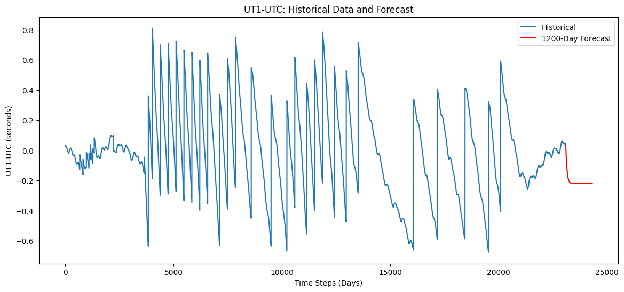
Outcome
TimeGPT produced the strongest validation result
Best measured accuracy
On a 36-month out-of-sample validation window, TimeGPT achieved RMSE 0.0236 and MAE 0.0201 after monthly resampling.
LSTM limitation surfaced
The LSTM's error was roughly half the maximum permitted UT1-UTC deviation before correction, making it insufficient for precision-critical use without stronger features.
Next modeling direction
Future work should bring in atmospheric/oceanic angular momentum, hybrid decomposition, direct multi-output forecasting, and ensembles for sub-0.1 second reliability.
05 · Supporting visuals
Exploratory plots used during analysis
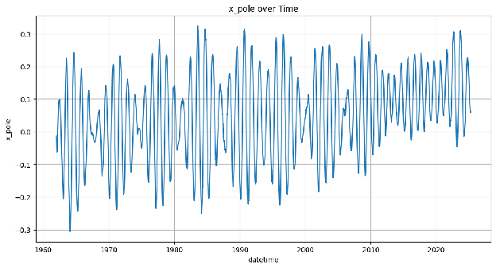
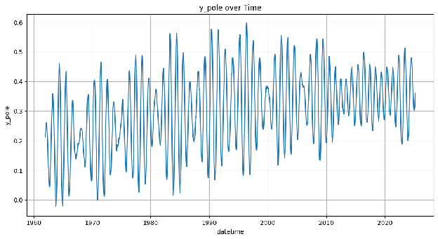
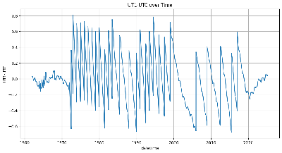
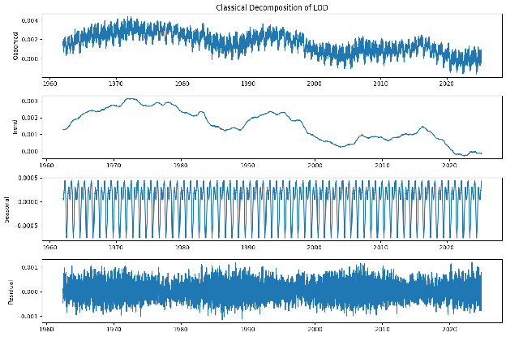
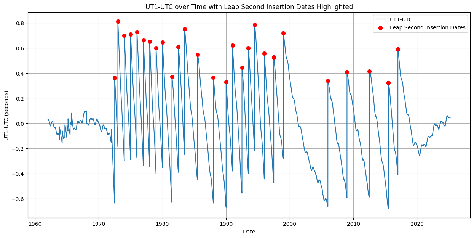
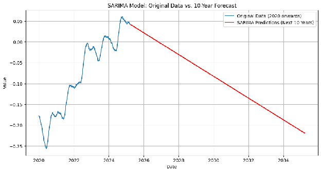
06 · Presented Work
Presented at URSI AP-RASC 2025 in Sydney
URSI Asia-Pacific Radio Science Conference
This work was presented at AP-RASC 2025, the URSI Asia-Pacific Radio Science Conference held from 17-22 August 2025 in Sydney, Australia. I was acknowledged for my contribution to the machine-learning analysis and prediction work shown in the poster.
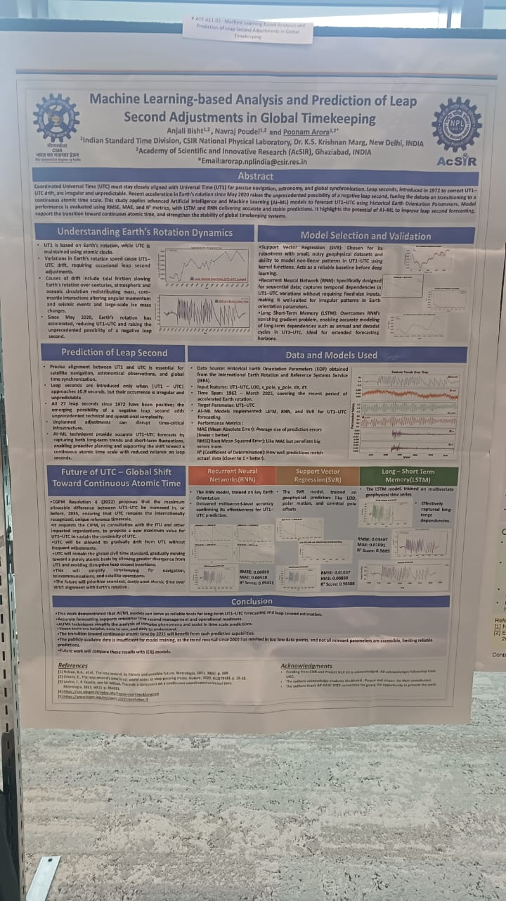
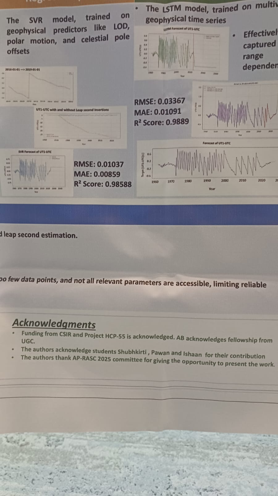